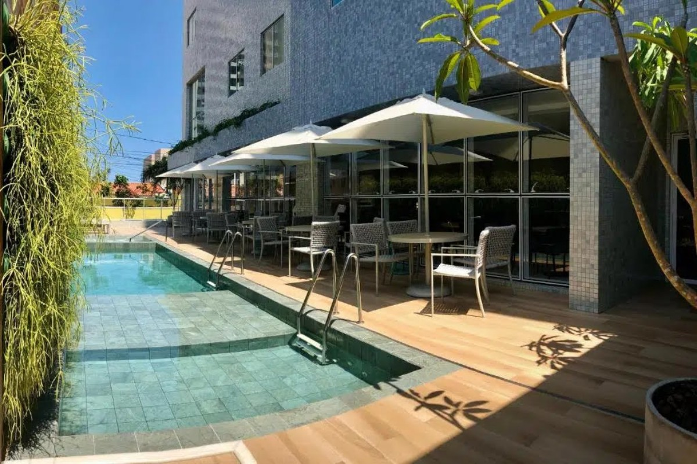
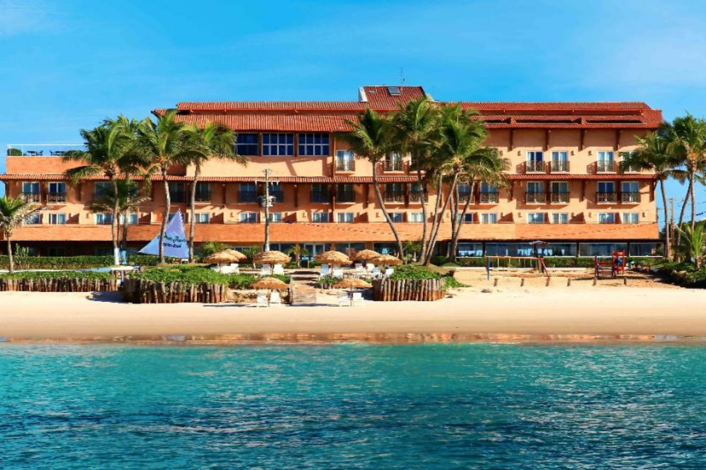
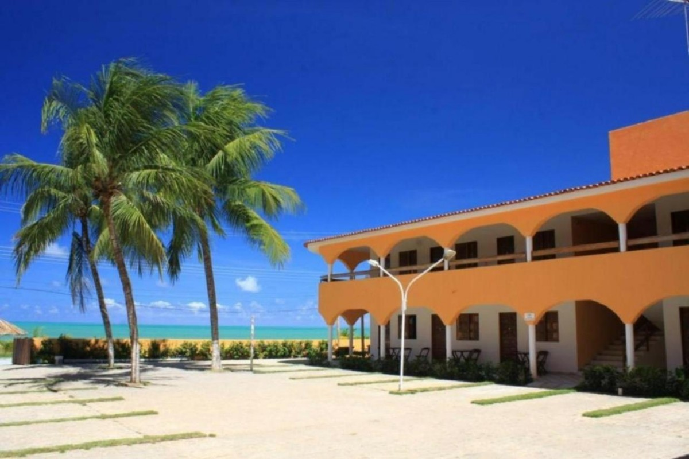
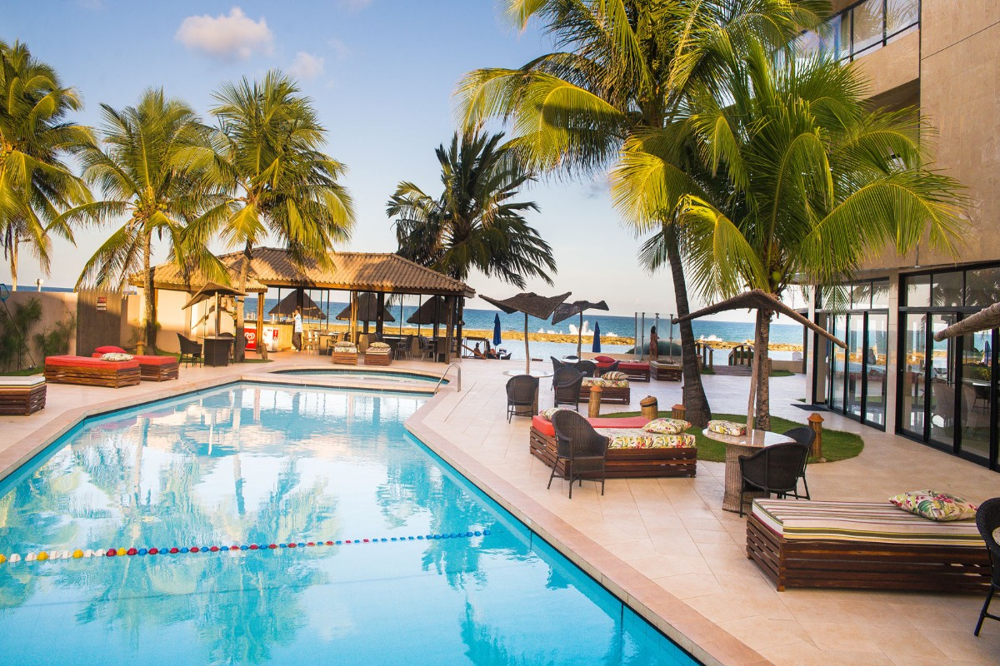
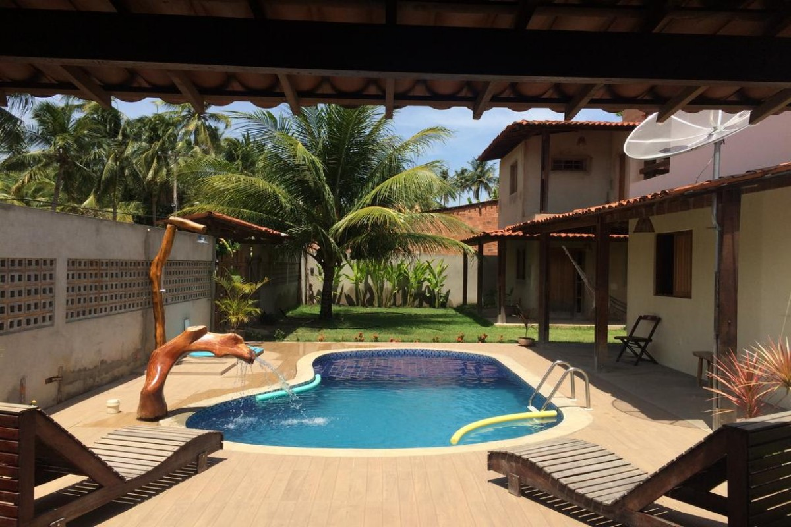

Flix Hotel - Jatiúca
Dentre os vários locais que oferecem hospedagem em Maceió, desde hotéis de luxo e pousadas até apartamentos e casas disponíveis para aluguel através do site Airbnb, um dos mais bem avaliados e conhecidos é o Flix Hotel, localizado a poucos metros da praia de Jatiúca.
Marechal Deodoro
Hotel Ponta Verde - Praia do Francês
Um dos hotéis mais famosos e frequentados em Marechal é o Hotel Ponta Verde, localizado à beira mar da praia do Francês, de onde se tem uma vista privilegiada do mar.
Paripueira
Pousada Vila dos Corais
Como opção de hospedagem, fica a sugestão da Pousada Vila dos Corais, localizada a apenas 100 metros das piscinas naturais de Paripueira
Barra de São Miguel
Village Barra Hotel
Para hospedagens na região, uma das mais famosas e bem avaliadas acomodações fica no Village Barra Hotel, localizado à beira mar da praia do Niquim.
São Miguel dos Milagres
Pousada Sol de Milagres
A dica de hospedagem em São Miguel dos Milagres é a Pousada Sol dos Milagres. Um espaço simples e aconchegante, para combinar com a cidade.
